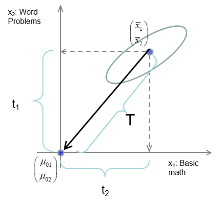
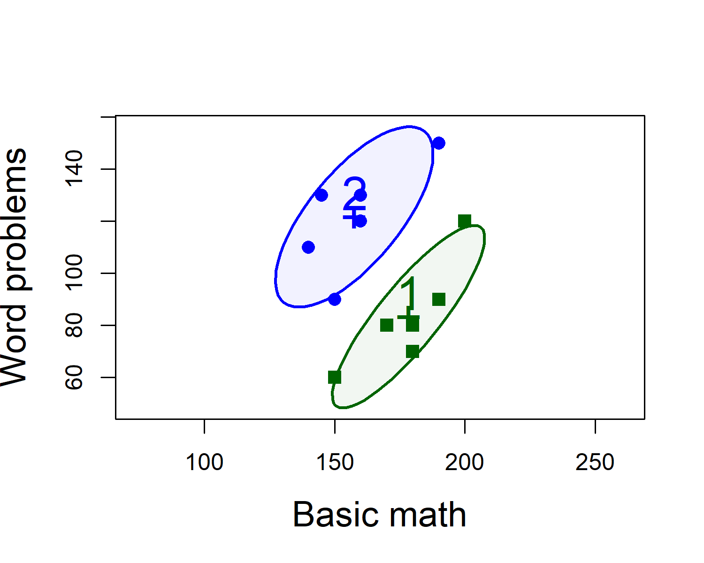
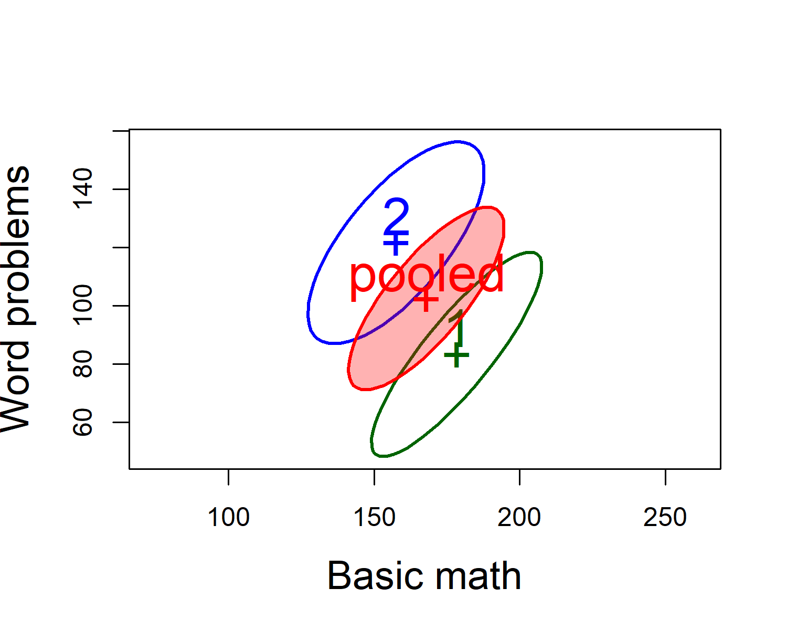
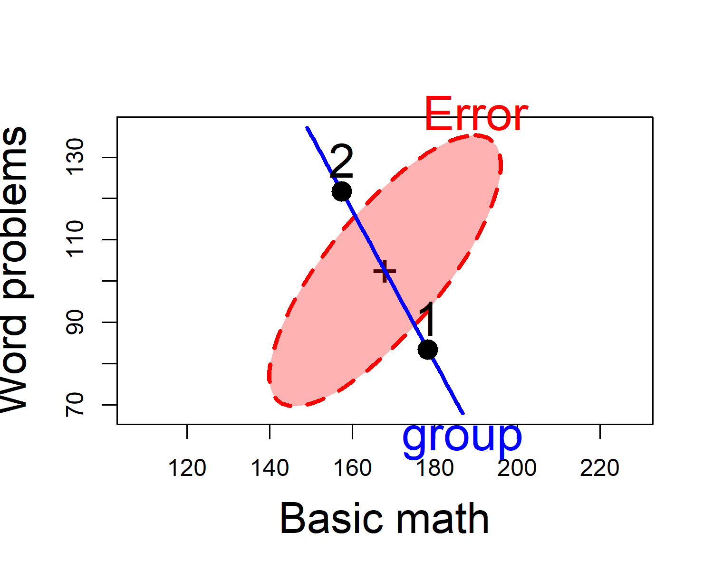
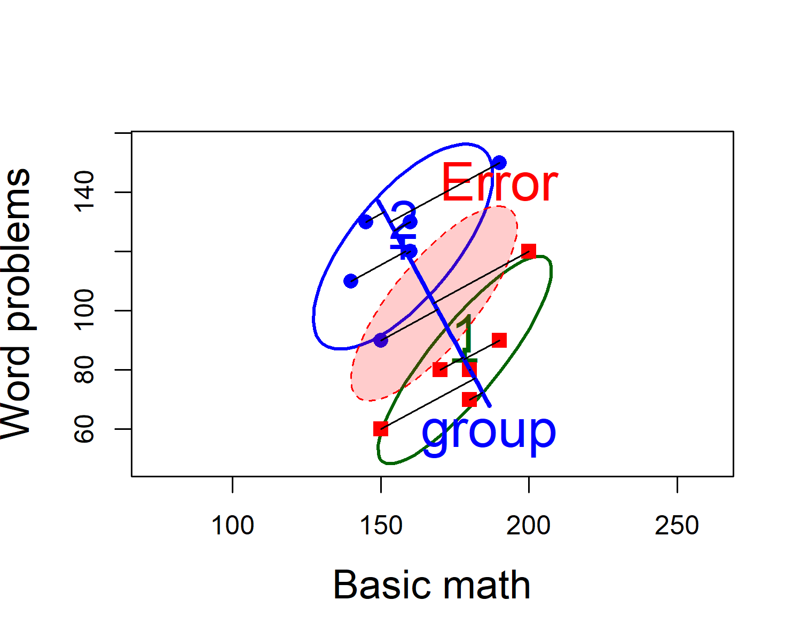
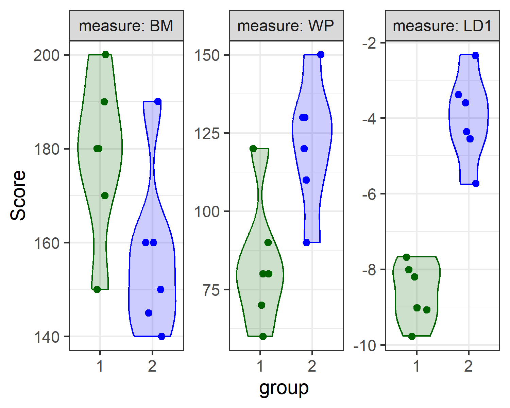

8 Hotelling’s \(T^2\)
Just as the one- and two- sample univariate \(t\)-test is the gateway drug for understanding analysis of variance, so too Hotelling’s \(T^2\) test provides an entry point to multivariate analysis of variance. This simple case provides an entry point to understanding the collection of methods I call the HE plot framework for visualizing effects in multivariate linear models, which are a main focus of this book.
The essential idea is that Hotelling’s \(T^2\) provides a test of the difference in means between two groups on a collection of variables, \(\mathbf{x} = x_1, x_2, \dots x_p\) simultaneously, rather than one by one. This has the advantages that it:
- does not require \(p\)-value corrections for multiple tests (e.g., Bonferroni);
- combines the evidence from the multiple response variables, and pools strength, accumulating support across measures;
- clarifies how the multiple response are jointly related to the group effect along a single dimension, the discriminant axis;
- in so doing, it reduces the problem of testing differences for two (and potentially more) response variables to testing the difference on a single variable that best captures the multivariable relations.
After describing it’s features, I use an example of a two-group \(T^2\) test to illustrate the basic ideas behind multivariate tests and hypothesis error plots.
Packages
In this chapter we use the following packages. Load them now.
8.1 \(T^2\) as a generalized \(t\)-test
Hotelling’s \(T^2\) (Hotelling 1931) is an analog the square of a univariate \(t\) statistic, extended to the Consider the basic one-sample \(t\)-test, where we wish to test the hypothesis that the mean \(\bar{x}\) of a set of \(N\) measures on a test of basic math, with standard deviation \(s\) does not differ from an assumed mean \(\mu_0 = 150\) for a population. The \(t\) statistic for testing \(H_0 : \mu = \mu_0\) against the two-sided alternative, \(H_0 : \mu \ne \mu_0\) is \[ t = \frac{(\bar{x} - \mu_0)}{s / \sqrt{N}} = \frac{(\bar{x} - \mu_0)\sqrt{N}}{s} \]
Squaring this gives
\[ t^2 = \frac{N (\bar{x} - \mu_0)^2}{s} = N (\bar{x} - \mu_0)(s^2)^{-1} (\bar{x} - \mu_0) \]
Now consider we also have measures on a test of solving word problems for the same sample. Then, a hypothesis test for the means on basic math (BM) and word problems (WP) is the test of the means of these two variables jointly equal their separate values, say, \((150, 100)\).
\[ H_0 : \mathbf{\mu} = \mathbf{\mu_0} = \begin{pmatrix} \mu_{0,BM} \\ \mu_{0,WP} \end{pmatrix} = \begin{pmatrix} 150 \\ 100 \end{pmatrix} \]
Hotelling’s \(T^2\) is then the analog of \(t^2\), with the variance-covariance matrix \(\mathbf{S}\) of the scores on (BM, WP) replacing the variance of a single score. This is nothing more than the squared Mahalanobis distance between the sample mean vector \((\bar{x}_{BM}, \bar{x}_{WP})^T\) and the hypothesized means \(\mathbf{\mu}_0\), in the metric of \(\mathbf{S}\), as shown in Figure 8.1.
\[\begin{align*} T^2 &= N (\bar{\mathbf{x}} - \mathbf{\mu}_0)^T \; \mathbf{S}^{-1} \; (\bar{\mathbf{x}} - \mathbf{\mu}_0) \\ &= N D^2_M (\bar{\mathbf{x}}, \mathbf{\mu}_0) \end{align*}\]

8.2 \(T^2\) properties
Aside from it’s elegant geometric interpretation Hotelling’s \(T^2\) has simple properties that aid in understanding the extension to more complex multivariate tests.
Maximum \(t^2\) : Consider constructing a new variable \(w\) as a linear combination of the scores in a matrix \(\mathbf{X} = [ \mathbf{x_1}, \mathbf{x_2}, \dots, \mathbf{x_p}]\) with weights \(\mathbf{a}\), \[ w = a_1 \mathbf{x_1} + a_2 \mathbf{x_2} + \dots + a_p \mathbf{x_p} = \mathbf{X} \mathbf{a} \] Hotelling’s \(T^2\) is then the maximum value of a univariate \(t^2 (\mathbf{a})\) over all possible choices of the weights in \(\mathbf{a}\). In this way, Hotellings test reduces a multivariate problem to a univariate one.
Eigenvalue : Hotelling showed that \(T^2\) is the one non-zero eigenvalue (latent root) \(\lambda\) of the matrix \(\mathbf{Q}_H = N (\bar{\mathbf{x}} - \mathbf{\mu}_0)^T (\bar{\mathbf{x}} - \mathbf{\mu}_0)\) relative to \(\mathbf{Q}_E = \mathbf{S}\) that solves the equation \[ (\mathbf{Q}_H - \lambda \mathbf{Q}_E) \mathbf{a} = 0 \tag{8.1}\] In more complex MANOVA problems, there are more than one non-zero latent roots, \(\lambda_1, \lambda_2, \dots \lambda_s\), and test statistics are functions of these.
Eigenvector : The corresponding eigenvector is \(\mathbf{a} = \mathbf{S}^{-1} (\bar{\mathbf{x}} - \mathbf{\mu}_0)\). These are the (raw) discriminant coefficients, giving the relative contribution of each variable to \(T^2\).
Critical values : For a single response, the square of a \(t\) statistic with \(N-1\) degrees of freedom is an \(F (1, N-1)\) statistic. But we chose \(\mathbf{a}\) to give the maximum \(t^2 (\mathbf{a})\); this can be taken into account with a transformation of \(T^2\) to give an exact \(F\) test with the correct sampling distribution: \[ F^* = \frac{N - p}{p (N-1)} T^2 \; \sim \; F (p, N - p) \tag{8.2}\]
Invariance under linear transformation : Just as a univariate \(t\)-test is unchanged if we apply a linear transformation to the variable, \(x \rightarrow a x + b\), \(T^2\) is invariant under all linear (affine) transformations, \[ \mathbf{x}_{p \times 1} \rightarrow \mathbf{C}_{p \times p} \mathbf{x} + \mathbf{b} \] So, you get the same results if you convert penguins flipper lengths from millimeters to centimeters or inches. The same is true for all MANOVA tests.
Two-sample tests : With minor variations in notation, everything above applies to the more usual test of equality of multivariate means in a two sample test of \(H_0 : \mathbf{\mu}_1 = \mathbf{\mu}_2\). \[ T^2 = N (\bar{\mathbf{x}}_1 - \bar{\mathbf{x}}_2)^T \; \mathbf{S}_p^{-1} \; (\bar{\mathbf{x}}_1 - \bar{\mathbf{x}}_2) \] where \(\mathbf{S}_p\) is the pooled within-sample variance covariance matrix.
Example
The data set heplots::mathscore gives (fictitious) scores on a test of basic math skills (BM) and solving word problems (WP) for two groups of \(N=6\) students in an algebra course, each taught by different instructors.
You can carry out the test that the means for both variables are jointly equal using either Hotelling::hotelling.test() (Curran and Hersh 2021) or car::Anova(),
hotelling.test(cbind(BM, WP) ~ group, data=mathscore) |> print()
#> Test stat: 64.174
#> Numerator df: 2
#> Denominator df: 9
#> P-value: 0.0001213
math.mod <- lm(cbind(BM, WP) ~ group, data=mathscore)
Anova(math.mod)
#>
#> Type II MANOVA Tests: Pillai test statistic
#> Df test stat approx F num Df den Df Pr(>F)
#> group 1 0.865 28.9 2 9 0.00012 ***
#> ---
#> Signif. codes: 0 '***' 0.001 '**' 0.01 '*' 0.05 '.' 0.1 ' ' 1What’s wrong with just doing the two \(t\)-tests (or equivalent \(F\)-test with lm())?
Anova(mod1 <- lm(BM ~ group, data=mathscore))
#> Anova Table (Type II tests)
#>
#> Response: BM
#> Sum Sq Df F value Pr(>F)
#> group 1302 1 4.24 0.066 .
#> Residuals 3071 10
#> ---
#> Signif. codes: 0 '***' 0.001 '**' 0.01 '*' 0.05 '.' 0.1 ' ' 1
Anova(mod2 <- lm(WP ~ group, data=mathscore))
#> Anova Table (Type II tests)
#>
#> Response: WP
#> Sum Sq Df F value Pr(>F)
#> group 4408 1 10.4 0.009 **
#> Residuals 4217 10
#> ---
#> Signif. codes: 0 '***' 0.001 '**' 0.01 '*' 0.05 '.' 0.1 ' ' 1From this, we might conclude that the two groups do not differ significantly on Basic Math but strongly differ on Word problems. But the two univariate tests do not take the correlation among the mean differences into account.
To see the differences between the groups on both variables together, we draw their data (68%) ellipses, using heplots::covEllpses()
colors <- c("darkgreen", "blue")
covEllipses(mathscore[,c("BM", "WP")], mathscore$group,
pooled=FALSE,
col = colors,
fill = TRUE,
fill.alpha = 0.05,
cex = 2, cex.lab = 1.5,
asp = 1,
xlab="Basic math", ylab="Word problems")
# plot points
pch <- ifelse(mathscore$group==1, 15, 16)
col <- ifelse(mathscore$group==1, colors[1], colors[2])
points(mathscore[,2:3], pch=pch, col=col, cex=1.25)
mathscore data, enclosing approximately 68% of the observations in each groupWe can see that:
- Group 1 > Group 2 on Basic Math, but worse on Word Problems
- Group 2 > Group 1 on Word Problems, but worse on Basic Math
- Within each group, those who do better on Basic Math also do better on Word Problems
We can also see why the univariate test, at least for Basic math is non-significant: the scores for the two groups overlap considerably on the horizontal axis. They are slightly better separated along the vertical axis for word problems. The plot also reveals why Hotelling’s \(T^2\) reveals such a strongly significant result: the two groups are very widely separated along an approximately 45\(^o\) line between them.
A relatively simple interpretation is that the groups don’t really differ in overall math ability, but perhaps the instructor in Group 1 put more focus on basic math skills, while the instructor for Group 2 placed greater emphasis on solving word problems.
In Hotelling’s \(T^2\), the “size” of the difference between the means (labeled “1” and “2”) is assessed relative to the pooled within-group covariance matrix \(\mathbf{S}_p\), which is just a size-weighted average of the two within-sample matrices, \(\mathbf{S}_1\) and \(\mathbf{S}_2\),
\[ \mathbf{S}_p = [ (n_1 - 1) \mathbf{S}_1 + (n_2 - 1) \mathbf{S}_2 ] / (n_1 + n_2 - 2) \]
Visually, imagine sliding the the separate data ellipses to the grand mean, \((\bar{x}_{\text{BM}}, \bar{x}_{\text{WP}})\) and finding their combined data ellipse. This is just the data ellipse of the sample of deviations of the scores from their group means, or that of the residuals from the model lm(cbind(BM, WP) ~ group, data=mathscore)
To see this, we plot \(\mathbf{S}_1\), \(\mathbf{S}_2\) and \(\mathbf{S}_p\) together,
covEllipses(mathscore[,c("BM", "WP")], mathscore$group,
col = c(colors, "red"),
fill = c(FALSE, FALSE, TRUE),
fill.alpha = 0.3,
cex = 2, cex.lab = 1.5,
asp = 1,
xlab="Basic math", ylab="Word problems")
mathscore data.One of the assumptions of the \(T^2\) test (and of MANOVA) is that the within-group variance covariance matrices, \(\mathbf{S}_1\) and \(\mathbf{S}_2\), are the same. In Figure 8.3, you can see how the shapes of \(\mathbf{S}_1\) and \(\mathbf{S}_2\) are very similar, differing in that the variance of word Problems is slightly greater for group 2. In Chapter XX we take of the topic of visualizing tests of this assumption, based on Box’s \(M\)-test.
8.3 HE plot and discriminant axis
As we describe in detail in Chapter XX, all the information relevant to the \(T^2\) test and MANOVA can be captured in the remarkably simple Hypothesis Error plot, which shows the relative size of two data ellipses,
- \(\mathbf{H}\): the data ellipse of the fitted values, which are just the group means on the two variables, \(\bar{\mathbf{x}}\), corresponding to \(\mathbf{Q}_H\) in Equation 8.1. In case of \(T^2\), the \(\mathbf{H}\) matrix is of rank 1, so the “ellipse” plots as a line.
# calculate H directly
fit <- fitted(math.mod)
xbar <- colMeans(mathscore[,2:3])
N <- nrow(mathscore)
crossprod(fit) - N * outer(xbar, xbar)
#> BM WP
#> BM 1302 -2396
#> WP -2396 4408
# same as: SSP for group effect from Anova
math.aov <- Anova(math.mod)
(H <- math.aov$SSP)
#> $group
#> BM WP
#> BM 1302 -2396
#> WP -2396 4408- \(\mathbf{E}\): the data ellipse of the residuals, the deviations of the scores from the group means, \(\mathbf{x} - \bar{\mathbf{x}}\), corresponding to \(\mathbf{Q}_E\).
8.3.1 heplot()
heplots::heplot() takes the model object, extracts the \(\mathbf{H}\) and \(\mathbf{E}\) matrices (from summary(Anova(math.mod))) and plots them. There are many options to control the details.
heplot(math.mod,
fill=TRUE, lwd = 3,
asp = 1,
cex=2, cex.lab=1.8,
xlab="Basic math", ylab="Word problems")
mathscore data. The line through the group means is the H ellipse, which plots as a line here. The red ellipse labeled ‘Error’ represents the pooled within-group covariance matrix.But the HE plot offers more:
A visual test of significance: the \(\mathbf{H}\) ellipse is scaled so that it projects anywhere outside the \(\mathbf{E}\) ellipse, if and only if the test is significant at a given \(\alpha\) level (\(\alpha = 0.05\) by default)
The \(\mathbf{H}\) ellipse, which appears as a line, goes through the means of the two groups. This is also the discriminant axis, the direction in the space of the variables which maximally discriminates between the groups. That is, if we project the data points onto this line, we get the linear combination \(w\) which has the maximum possible univariate \(t^2\).
You can see how the HE plot relates to the plots of the separate data ellipses by overlaying them in a single figure. We also plot the scores on the discriminant axis, by using this small function to find the orthogonal projection of a point \(\mathbf{a}\) on the line joining two points, \(\mathbf{p}_1\) and \(\mathbf{p}_2\), which in math is \(\mathbf{p}_1 + \frac{\mathbf{d}^T (\mathbf{a} - \mathbf{p}_1)} {\mathbf{d}^T \mathbf{d}}\), letting \(\mathbf{d} = \mathbf{p}_1 - \mathbf{p}_2\).
dot <- function(x, y) sum(x*y)
project_on <- function(a, p1, p2) {
a <- as.numeric(a)
p1 <- as.numeric(p1)
p2 <- as.numeric(p2)
dot <- function(x,y) sum( x * y)
t <- dot(p2-p1, a-p1) / dot(p2-p1, p2-p1)
C <- p1 + t*(p2-p1)
C
}Then, we run the same code as before to plot the data ellipses, and follow this with a call to heplot() using the option add=TRUE which adds to an existing plot. Following this, we find the group means and draw lines projecting the points on the line between them.
covEllipses(mathscore[,c("BM", "WP")], mathscore$group,
pooled=FALSE,
col = colors,
cex=2, cex.lab=1.5,
asp=1,
xlab="Basic math", ylab="Word problems"
)
pch <- ifelse(mathscore$group==1, 15, 16)
col <- ifelse(mathscore$group==1, "red", "blue")
points(mathscore[,2:3], pch=pch, col=col, cex=1.25)
# overlay with HEplot (add = TRUE)
heplot(math.mod,
fill=TRUE,
cex=2, cex.lab=1.8,
fill.alpha=0.2, lwd=c(1,3),
add = TRUE,
error.ellipse=TRUE)
# find group means
means <- mathscore |>
group_by(group) |>
summarize(BM = mean(BM), WP = mean(WP))
for(i in 1:nrow(mathscore)) {
gp <- mathscore$group[i]
pt <- project_on( mathscore[i, 2:3], means[1, 2:3], means[2, 2:3])
segments(mathscore[i, "BM"], mathscore[i, "WP"], pt[1], pt[2], lwd = 1.2)
}
8.4 Discriminant analysis
Discriminant analysis for two-group designs or for one-way MANOVA essentially turns the problem around: Instead of asking whether the mean vectors for two or more groups are equal, discriminant analysis tries to find the linear combination \(w\) of the response variables that has the greatest separation among the groups, allowing cases to be best classified. It was developed by Fisher (1936) as a solution to the biological taxonomy problem of developing a rule to classify instances of flowers—in his famous case, Iris flowers—into known species (I. setosa, I. versicolor, I. virginica) on the basis of multiple measurements (length and width of their sepals and petals).
(math.lda <- MASS::lda(group ~ ., data=mathscore))
#> Call:
#> lda(group ~ ., data = mathscore)
#>
#> Prior probabilities of groups:
#> 1 2
#> 0.5 0.5
#>
#> Group means:
#> BM WP
#> 1 178 83.3
#> 2 158 121.7
#>
#> Coefficients of linear discriminants:
#> LD1
#> BM -0.0835
#> WP 0.0753The coefficients give \(w = -0.84 \text{BM} + 0.75 \text{WP}\). This is exactly the direction given by the line for the \(\mathbf{H}\) ellipse in Figure 8.5.
To round this out, we can calculate the discriminant scores by multiplying the matrix \(\mathbf{X}\) by the vector \(\mathbf{a} = \mathbf{S}^{-1} (\bar{\mathbf{x}}_1 - \bar{\mathbf{x}}_2)\) of the discriminant weights.
math.lda$scaling
#> LD1
#> BM -0.0835
#> WP 0.0753
scores <- cbind(group = mathscore$group,
as.matrix(mathscore[, 2:3]) %*% math.lda$scaling) |>
as.data.frame()
scores |>
group_by(group) |>
slice(1:3)
#> # A tibble: 6 × 2
#> # Groups: group [2]
#> group LD1
#> <dbl> <dbl>
#> 1 1 -9.09
#> 2 1 -8.17
#> 3 1 -9.01
#> 4 2 -4.33
#> 5 2 -4.58
#> 6 2 -5.75Then a \(t\)-test on these scores gives Hotelling’s \(T\), accessed via the statistic component of t.test()
Finally, it is instructive to compare violin plots for the three measures, BM, WP and LD1. To do this with ggplot2 requires reshaping the data from wide to long format so the plots can be faceted.
scores <- mathscore |>
bind_cols(LD1 = scores[, "LD1"])
scores |>
tidyr::gather(key = "measure", value ="Score", BM:LD1) |>
mutate(measure = factor(measure, levels = c("BM", "WP", "LD1"))) |>
ggplot(aes(x = group, y = Score, color = group, fill = group)) +
geom_violin(alpha = 0.2) +
geom_jitter(width = .2, size = 2) +
facet_wrap( ~ measure, scales = "free", labeller = label_both) +
scale_fill_manual(values = c("darkgreen", "blue")) +
scale_color_manual(values = c("darkgreen", "blue")) +
theme_bw(base_size = 14) +
theme(legend.position = "none")
You can readily see how well the groups are separated on the discriminant axes, relative to the two individual variables.
8.5 Exercises
- The value of Hotelling’s \(T^2\) found by
hotelling.test()is 64.17. The value of the equivalent \(F\) statistic found byAnova()is 28.9. Verify that Equation 8.2 gives this result.
#> Writing packages to C:/R/Projects/Vis-MLM-quarto/bib/pkgs.txt
#> 16 packages used here:
#> base, broom, car, carData, corpcor, datasets, dplyr, ggplot2, graphics, grDevices, heplots, Hotelling, methods, stats, tidyr, utils